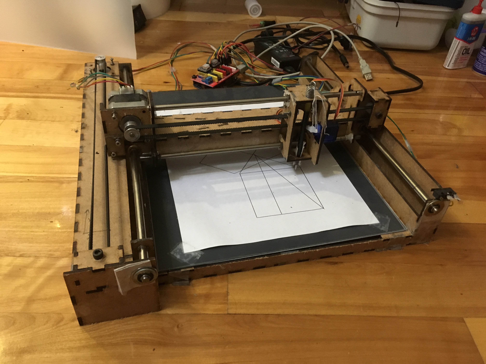
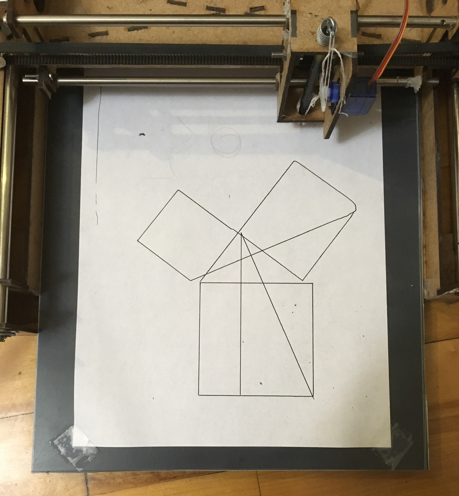
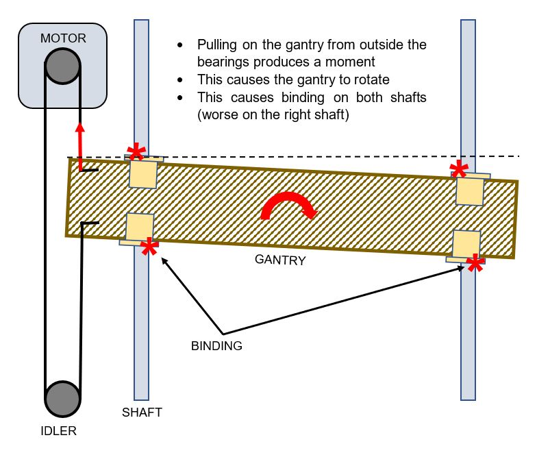
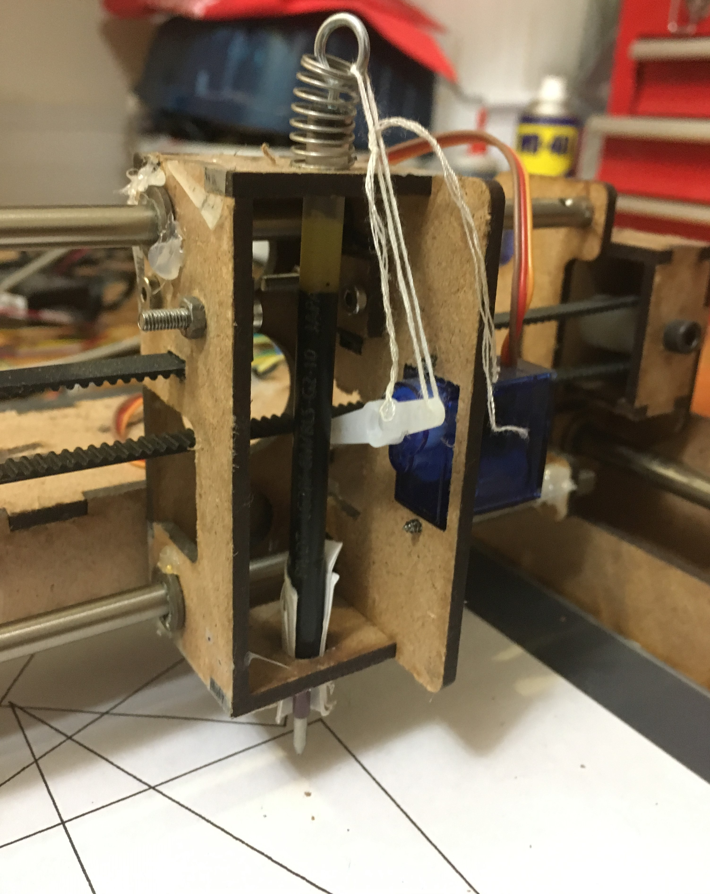
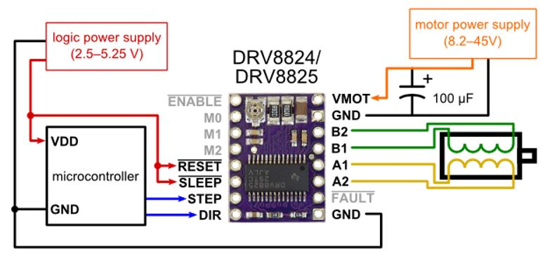
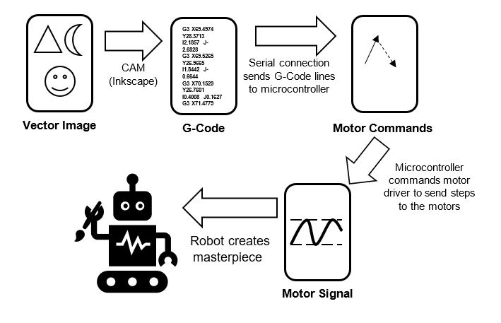
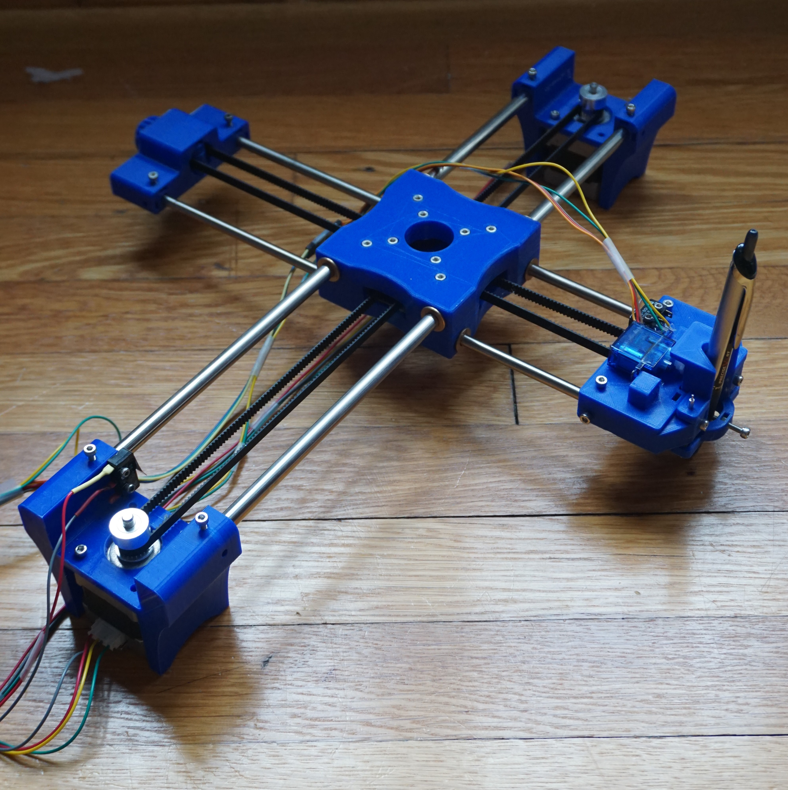
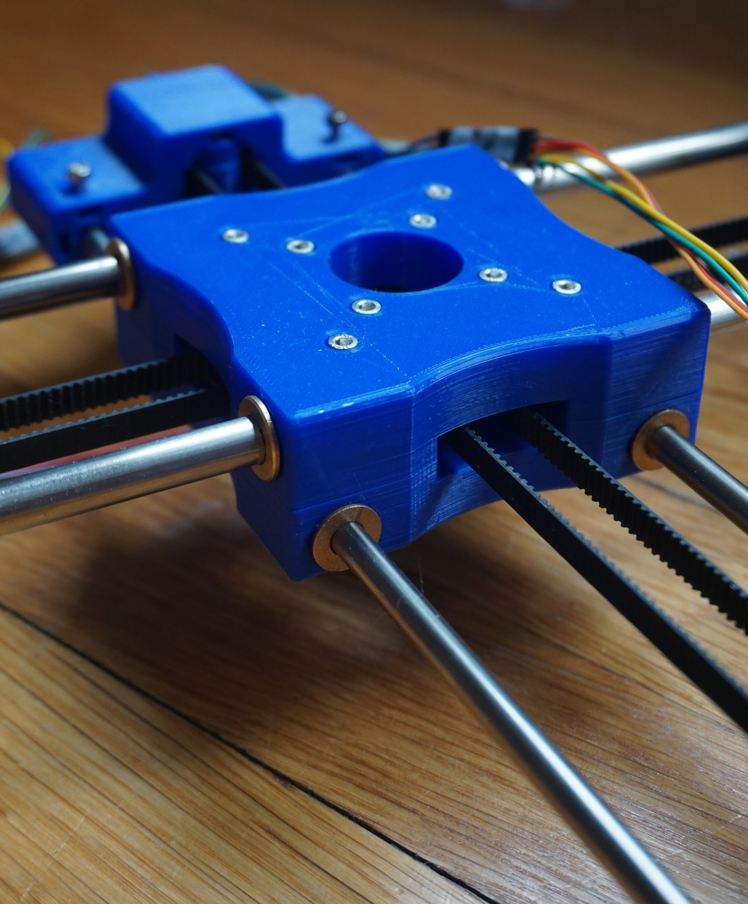
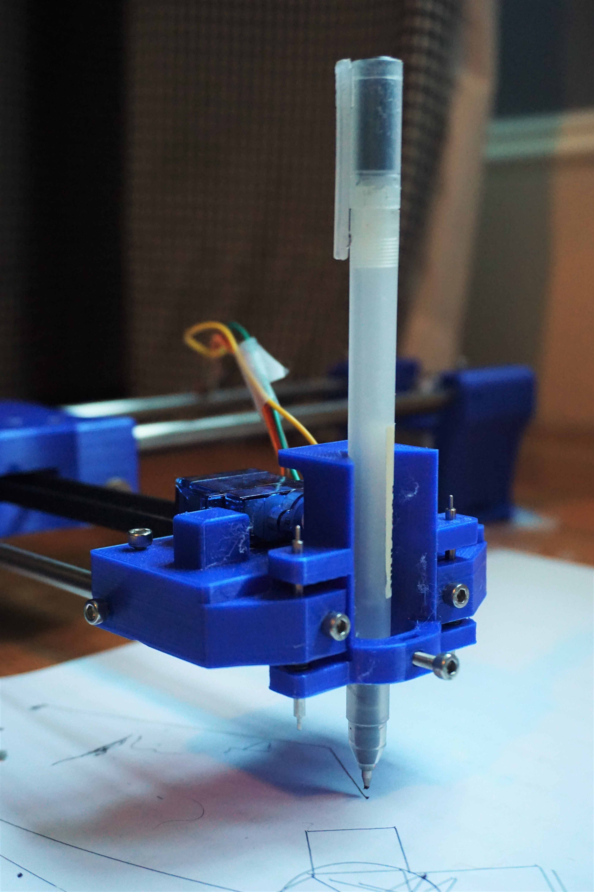
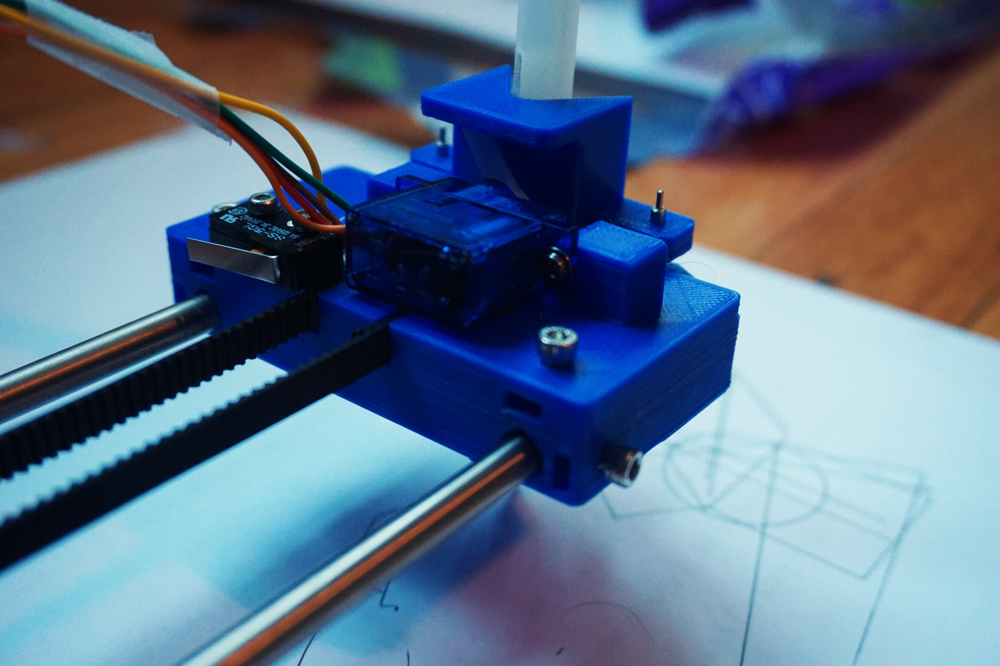

I have been working on this CNC plotter on and off for about a year and a half. There were plenty of setbacks and hangups along the way, but I am very happy with how the final product turned out! This is probably the most involved project I’ve taken on so far and it required multiple iterations. I got to learn just about everything about stepper motors, stepper motor drivers, and gcode. I also learned some valuable lessons about mechanical systems involving belts and linear motion.
I wanted to salvage as many parts as possible for this. On the final machine the shafts, bronze bearings, and limit switches are all salvaged from old inkjet printers I found on the street or on craigslist. I love taking apart printers, it’s amazing how accurate they are for the price, and if you look inside they’re full of interesting mechanisms and gearsets and the system they use for optical encoders is fascinating.
I first started thinking about this project because I heard about people making their own laser cutters. I love laser cutters and have done several projects with them. I figured that before I invest too much in building a laser cutter I should figure out how to get the x-y CNC motion working, so instead of a laser I would use a pen and it would be easy (it wouldn’t) to upgrade to a laser in the future. Well in the meantime I ended up buying a 3D printer and have never looked back. I think that in general 3D printed parts are stronger and easier to develop than laser cut parts and I don’t think I would have much use for a laser cutter now. Still, the drawing machine was a fun and engaging project and I love watching it run now that I have it working nicely. The video below shows the finished machine in action
I knew from the beginning that I would probably need to do multiple iterations of the mechanical design, so my strategy for this project was to build a mechanical system quickly and have something good enough to get all the electronics and software working. Then I could use the lessons learned from the prototype to make a second version of the mechanical design.
The prototype is made of laser cut 1/8” MDF. It uses two stepper motors and timing belts to move a gantry system in the x and y axes. The mechanism was really just awful. No good at all. The y axis would bind up and move in jerking motions and the belts couldn’t be tensioned enough. This led to the hysteresis you can see in the image below. Those lines are supposed to meet at a point but they’re off by about 1/4”.
The mechanical design of the prototype had three main problems: binding in the y axis, belt tensioning, and the pen lifting mechanism. The diagram below shoes the cause of the binding in the y axis. It was so bad that to get the gantry to move at all I had to take out one of the bearings on the shaft furthest from the belt. The binding problem didn’t occur on the x axis which is attached to the moving gantry because the belt pulls from in between the two shafts and does not cause a moment.
The belt tensioning was achieved by pulling as hard as I can on the belt with one hand and trying to tighten down a clamping piece of wood with the other. Not very effective. The problem of belt tensioning has come up in other projects too especially in the work I did on McGill Robotics. I’ve found that any system that requires the user to pull tension on a belt and then try to clamp something in place doesn’t work. The best way to tension a belt is to use a screw that can pull or push an idler pulley away from the belt. The mechanical advantage and anti-backdrive provided by the screw are perfect for the application and it’s the solution I went with for the final version.
The pen lifting system…..let’s just not talk about it. That spring isn’t even in the right orientation.
The motors used in this project are 200 step per revolution hybrid bipolar stepper motors. I think this video does the best job at explaining how the internals of a stepper motor works. Basically you have a permanent magnet rotor divided into 200 sections of alternating polarity and a two phase stator. By alternating which stator coil is driven you can move the rotor by 1/200th of a rotation, 1.8 degrees. You can get even more divisions of a revolution by driving a smooth transition of power between adjacent coils, this is called mocrostepping. There are ICs available to produce the microstep signal, I chose the TI DRV8825. There are 3 pins on the chip that can be used to set the microstep mode from full steps all the way down to 1/32 steps. Then there are two other pins used to tell the chip to send a step to the motor and which direction to turn. Four more pins connect to the two poles of the motor. Two for power and ground, and the rest are boring stuff like sleep and enable. Thankfully, there’s an awesome CNC shield you can buy for an Arduino that can support up to four of these drivers and takes care of all the other stuff like limit switches and natively supports GRBL (more on that later).
Getting the stepper motors to turn nicely caused the longest delays in the project. For so long all I could get them to do was this really awful grinding jerky motion. If you are doing a project involving stepper motors there are two very important details, power supply voltage, and driver chip calibration. First, the nominal voltage of the stepper motor is really just provided to indicate the resistance of the stator coils. It’s the voltage that would draw rated current when the rotor is holding a position. Once the motor gets moving though, that voltage would supply less current to the coils because of back EMFs. The rotor can’t turn effectively because the reduced current reduces the electromagnetic torque on the rotor and the motor starts skipping steps. To ensure the driver can supply enough current to the motor it needs a power supply at a much higher voltage than rated. In this case I used a 12 V power supply for my nominally 3.4 V motors. The second important detail when using stepper drivers such as the DRV8825 is that the chip controls the current it sends to the motor. There is a potentiometer on the carrier for the chip that needs to be set to ensure the current is less than rated for the motor to prevent damage. Procedure for doing this calibration can be found here.
You may be wondering how the robot knows where it is without any position sensors like an encoder. Well this robot and most CNC machines use open loop control. When the machine starts up it drives each axis to its limit until it hits a limit switch, this tells the machine where zero is. Because the machine knows how far a single step moves the tool, if it just keeps track of every step since the original homing it knows where the tool must be. This does lead to potential problems. For example, if you hold down the shaft of one of the motors so that it can’t turn but the microcontroller sends steps, the controller thinks the motor has moved the correct distance but it’s really behind where it should be. The controller has no way of knowing where the tool actually is because there’s no feedback, this is the problem with open loop control. The reason open loop can work in this context is because the tool force is always the same, just dragging a pen across paper. So in normal operation the torque provided by the motor will always be enough to move the tool and it will never skip a step.
After getting the prototype assembled and the motors spinning I started the process of writing software that could go from a vector image on a computer to a set of motor commands that the microcontroller could send to the motor drivers to produce an image. The clear choice for sending commands to the microcontroller was through G-Code, the motion control language used by practically all CNC machines. A typical G-Code command is one line made up of several words. For example, ‘G01 X100 Y50 F3000’ means ‘move in a straight line (G01) to coordinates (100, 50) at a federate of 3000 mm/min’. The process from an image on the computer to an image on paper is shown below.
The first step is to convert a vector image into G-Code. The best free way I’ve found to do that is with a plugin for Inkscape called G-Code tools. The plugin is riddled with spelling errors and works in bizarre ways but you can get it to work. Once you have the G-Code you need two programs. One program runs on the computer and sends a G-Code file line by line through the computer’s USB port to the serial port of the Arduino. The other program runs on the Arduino and listens to the serial port then interprets a gcode line and figures out how to get the motors to move in the specified path.
I started by trying to write the software on my own, mostly as a learning exercise. The G-Code sender was written in Python and I learned about encoding and how serial connections work. The G-Code interpreter was written in Arduino C with help from this tutorial. Writing the G-Code interpreter on the Arduino was fun and I learned about things like Bresenham’s Line Algorithm, and some nuances of G-Code like the alternate coordinate systems supported and the goofy way circular paths are defined.
Eventually though, I decided to go with some open source software that would have better performance than what I was making. For the Arduino G-Code Interpreter I went with GRBL, a really cool project for CNC machines running on Arduino. GRBL supports practically all of G-Code, and even looks ahead at future paths to plan acceleration and speeds for smoother movement. The code is all written in double black magic C that uses every single bit of memory on the Arduino. The G-Code sender I used is Universal G-Code Sender a lightweight sender that works well with GRBL and has a visualizer built in.
The updated mechanical design of this robot is all 3D printed. I printed everything at home on my Ender 3, and all the parts were modeled in Inventor. Designing 3D printed parts gives you a lot more freedom than laser cut parts but there are still some limitations based on print orientation. The new design has a completely new motion system that solves the problems with the gantry system discussed earlier. It also has improved belt tensioning and a better pen lifting system and all the electronics are neatly tucked away in an enclosure.
This version uses a CoreXY or H-Bot motion system. There’s a single loop of timing belt attached to two motors. When the motors turn the same direction it moves the pen in the Y direction and when they turn in the opposite direction the pen moves in X. GRBL is easy to configure to the CoreXY equations of motion. This motion system is a major improvement for two main reasons. First, the belts are pulling in between bearings not outside of them so there is no binding issue. Second, the two motors are stationary so the moving part of the system is much lighter, this facilitates faster motion. The picture below shows the center of the motion system, the bearing block. The belt enters this block and turns 90 degrees. Those four central screws have printed idler pulleys on them for turning the belt. This is my favorite part, I like the look of it, the pulleys work well, and the bearings all snapped in right off the printer with a really satisfying click.
This is the belt tensioning system. It’s located on the block that holds the X axis shafts where there’s an idler pulley. The pulley is attached to a sliding shaft with a 3D printed thread. On the back of the block there’s a nut that pulls the pulley out when it’s tightened, this tensions the belt. The system works really well. It doesn’t slip from where you set it and the threads worked straight off the printer!
The pen lifting mechanism took the most iterations to get right and there’s still room for improvement. I started with a sliding dovetail type design but it just wasn’t smooth enough. Now the pen holder slides on two small shafts from one of the printers I took apart. There are springs set into the main body that apply pressure on the pen. The servo on the back lifts up the pen based on a M03 G-Code command (typically this is used to set the spindle speed of a CNC mill). This part secures the ends of the belts by setting them into a loop shaped slot where the timing teeth can lock against each other. The part also holds the shafts and the limit switch, so it’s pretty busy and required a lot of rework to get right. You can see in the video that there’s actually a lot of compliance as the pen is dragging in different directions. This is caused by the loose fit between the shafts and the holes they’re sliding in. Two potential solutions are to use actual bearings with a tighter fit or find some way to preload the bearings so they can’t move around as much.
 The final version of the robot is using a modded version of GRBL that allows for M03 commands to send a PWM signal to a servo. I also had to write a python script that shortens all of the G-Code lines written by Inkscape because there’s a 50 character limit set by the Arduino.
This was a great project and I’m really happy with the result! I love watching it work away at a large drawing and keep thinking of new things to send it. Last week I had it write some letters for me. I almost left it at the first version until I started watching Wintergatan’s progress on making the Marble Machine X. The quality and attention to detail he puts into every part of the machine inspired me to make a better version of my machine. There’s still room for improvement such as a better pen system and a more stable base that I may add in the future, but as is it exceeds my expectations. After seeing this project through I feel like I could definitely make another CNC machine easily or even a 3D printer.
I spent a lot of time looking in the wrong direction for resources, so here are some of the most useful pages I came across.